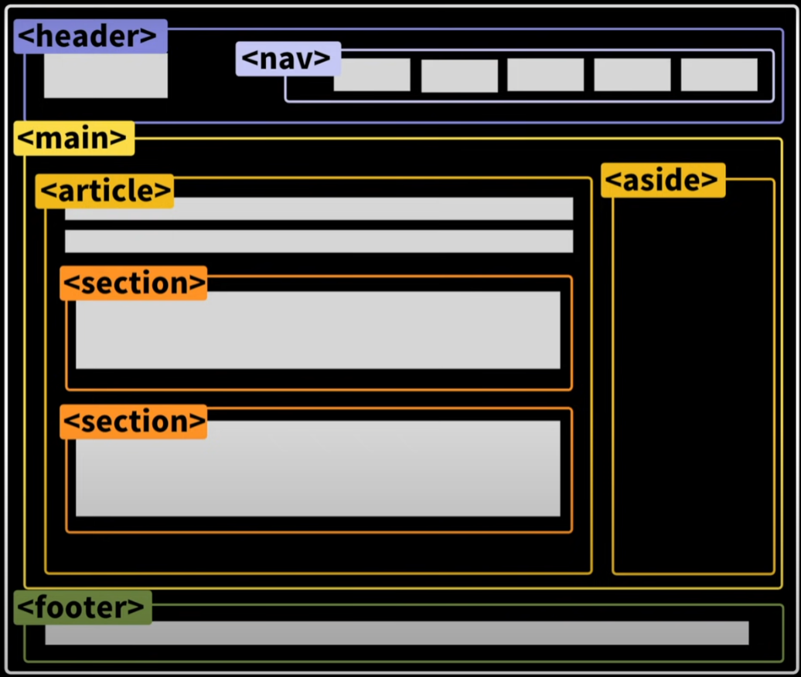

Semantic tags : 의미의 의미가 있는
Semantic tags를 사용하는 이유 3가지
SEO 설치엔진 옵티에이션
Accessibility 웹 접근성
For us, Maintainability 개발자를 위해서
div로 모든걸 해결하려고 하지말자 적절한 태그를 사용하자

article : 독립적인 페이지 일때 메인과 전혀 다른 내용일때 고유한 정보를 나타낼때 예) 신문기사 하나
section : article안에 같은 내용들을 묶을 때 사용한다.
em : 강조하는 이탤릭체 *정말 강조하고 싶을때
i : 시각적으로만 이탤릭체 별다른 내용 x 시각적으로만 이탤릭체를 사용하고 싶을떄!
strong : 정말 중요한 볼드체 em과 동일
b : 시각적으로만 사용 볼드체 i와 동일
img : 하나의 중요한 요소로 자리를 잡을 때
background-image : 문서의 일부분이 아닌 배경인 이미지로 만들때
button : 특정한 액션을 위해선 버튼
a : 어디론가 이동할때 링크
table : 데이터
css : 스타일링이 필요할때
드림코딩 by 엘리 시맨틱 태그, 중요한 태그들 모음
참고한 유튜브